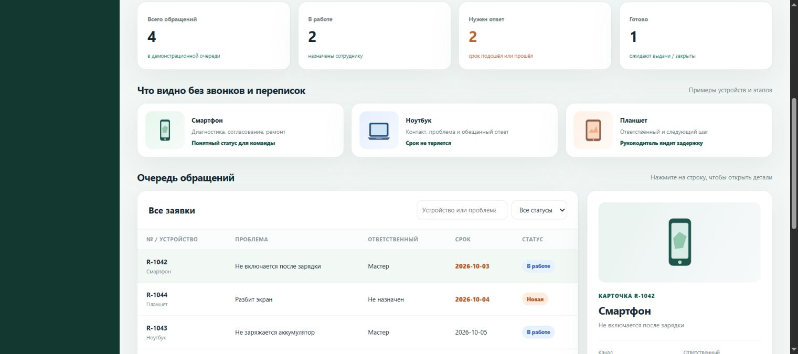
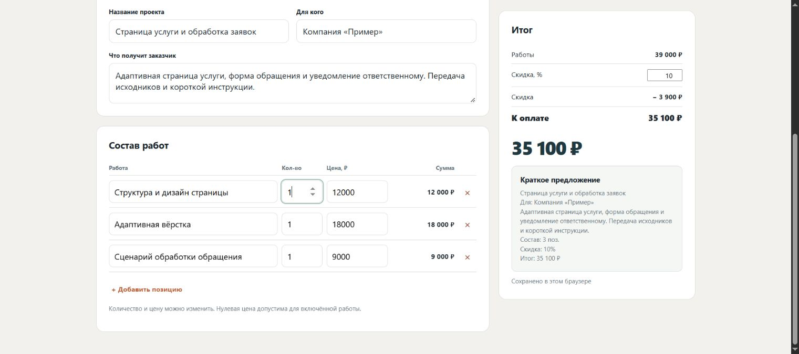

Собственный опубликованный проект
Собственный опубликованный проект01 / интернет-магазин
Diority
Каталог цифровых товаров и калькулятор суммы перед оформлением заказа.
Задача, решение и сайт ↗Арсен Галустьян / разработка и автоматизация
Каталог товаров, учёт ремонтов, очередь обращений и расчёт сметы. Здесь можно попробовать действия, посмотреть интерфейс и скачать пример результата.
Собственные проекты и интерактивные демонстрации. Статус и состав каждой работы указаны в описании.
Показано работ: 5
Собственный опубликованный проект01 / интернет-магазин
Каталог цифровых товаров и калькулятор суммы перед оформлением заказа.
Задача, решение и сайт ↗
Интерактивное демо02 / учёт обращений
Карточки устройств, ответственные и следующий шаг в одной очереди.
Что можно проверить ↗ Интерактивное демо
Интерактивное демо03 / входящие заявки
Не забыть, кому ответить: поиск, статус, срок и экспорт очереди.
Задача и живой пример ↗ Демонстрационный концепт
Демонстрационный концепт04 / адаптивная страница
Длинная страница: от первого экрана до планировок и примера подбора.
Посмотреть концепт ↗
Интерактивное демо05 / коммерческие предложения
Позиции, количество и скидка: итог пересчитывается сразу.
Проверить калькулятор ↗Образцы результата / PDF
Отчёт с проверенными действиями и скриншотами, образец оформления найденной ошибки и пример переноса данных в фиксированный PDF-макет.
Проверка двух живых демонстраций ↗
Образец отчёта об ошибке ↗
Исходные данные и заполненный PDF-макет ↗
Следующий шаг
Пришлите описание и пример. Предложу конкретный результат, стоимость и срок до начала работы.